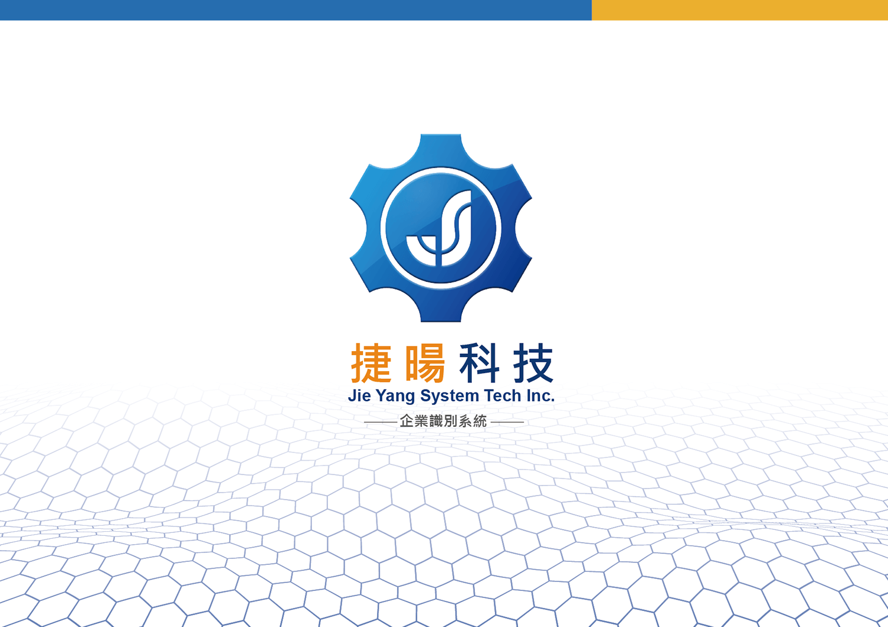
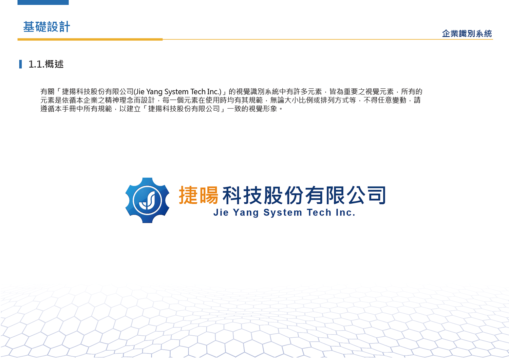
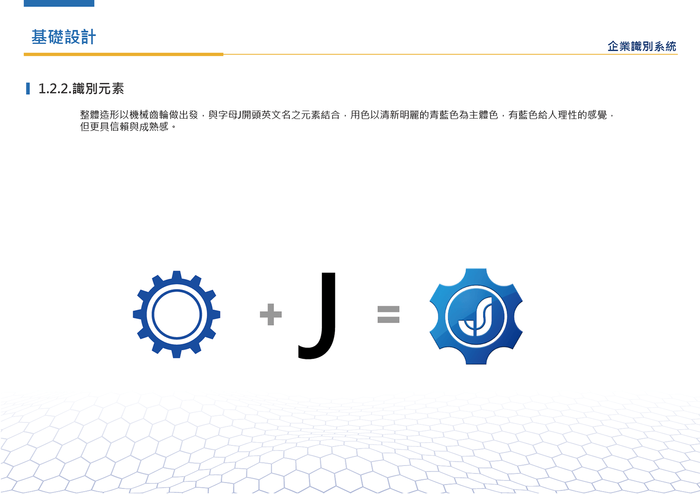
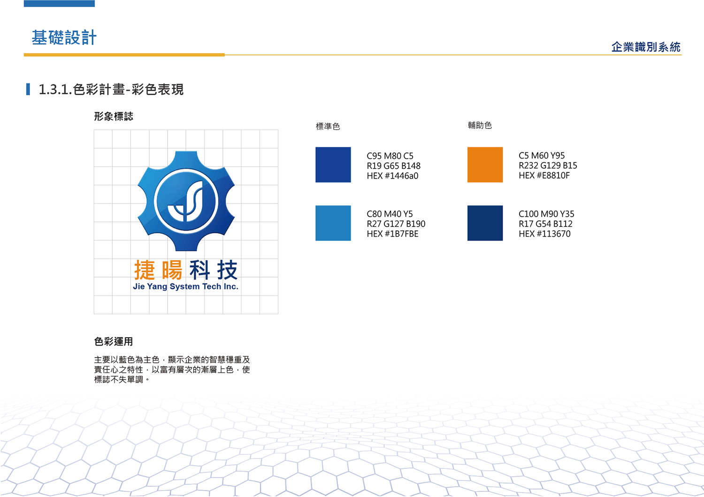
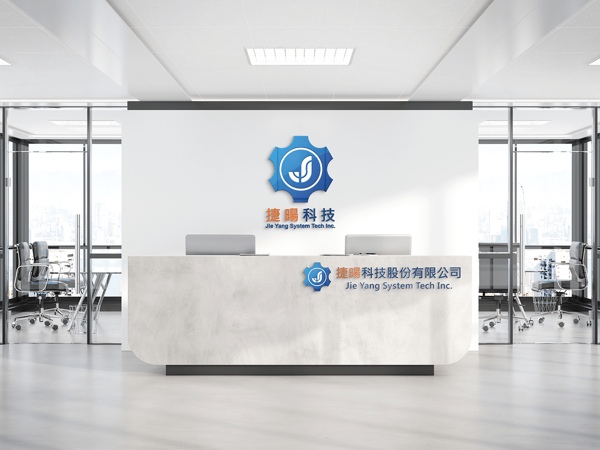

企業標誌設計(CIS)
企業名稱
捷暘科技股份有限公司
設計產品
商標設計、商業名片、形象牆等。
設計理念
捷揚科技主要經營販售硬體產品 ，商標設計上採用齒輪與字母「J」結合設計，齒輪象徵彼此牽動著彼此，密不可分; 字母「Ｊ」取自捷暘的英文字母開頭，捷揚科技，雖然看似不起眼，卻是個不可或缺的重要夥伴的存在。
公司簡要
捷暘科技股份有限公司 創立於2013年，目前以銷售科技硬體設備為主，供給客戶優良的商品、保證其品質與諮詢服務，並提供廣泛的售後服務及解決方案，與客戶建構緊密的夥伴關係。
捷暘科技 謹守誠信、創新、永續的經營理念；秉持創新之精神、誠信正直的態度，不斷地開發技術及落實本土化，精益求精、力求一致性的完美品質，並為客戶謀求最大利益、共同成長。




